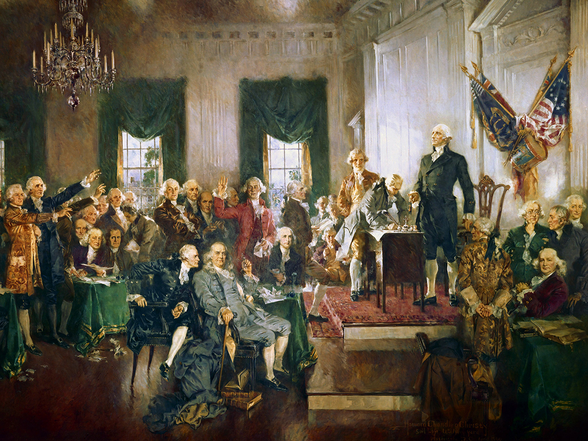

Dissatisfaction with the Articles of Confederation prompted the call for a convention in Philadelphia in 1787. Delegates focused on creating a constitution for a new form of government. The Virginia Plan, which favored the larger states, and the New Jersey Plan, which favored smaller ones, didn’t garner sufficient support.
The idea here was that each state was a sovereign entity that arrived at the union freely and that all states should receive equal consideration. You can see how this would cause a complication in the attempt to form a new government. Lower-population states were worried about being overwhelmed by the interests of larger-population states, while the larger states felt it only fair to base representation on population. Much of this sentiment still exists in low-population states in the United States today.
| Virginia Plan | New Jersey Plan |
|---|---|
|
Proposal: Legislature based on population, which would advantage larger states |
Proposal: Legislature in which every state had the same amount of legislators |
|
Argument: People as a percentage of the population should have representation in government. |
Argument: Each state is a sovereign entity that arrived at the union freely, and all should be given equal consideration. |
| Support: Delegates from Virginia and other large states such as New York |
Support: New Jersey delegate William Paterson, as a rebuttal to the Virginia Plan |
A compromise offered by Connecticut provided for a bicameral (two-house) legislature and thus resolved the large-state/small-state controversy. The Connecticut Compromise (also known as the Great Compromise of 1787 or Sherman Compromise) wasn’t the only political compromise needed to get the states to sign on for the new plan of government. It was also necessary to agree on other controversies, such as whether the president would select the Supreme Court justices or the Senate would, and the issue of how to count enslaved people in the census, by making additional compromises. Interestingly, the great compromise didn’t happen at Independence Hall but at the pub across the way (called City Tavern today).
